In Chapter 9, we presented the various object models supported by the two major browsers. These object models included objects for the window, documents, forms, images, and so on. We pointed out that these objects correspond to the features of the browser as well as to the features of the HTML document and style sheets. A significant early problem with browser-based object models is that each vendor decides which features to expose to the programmer and how to do so. Fortunately, today this isn’t so much of a problem because the W3C came up with a standard that maps between an HTML or XML document and the document object hierarchy presented to the programmer. This model is called the Document Object Model, or the DOM for short (www.w3.org/DOM). The DOM provides an application programming interface (API) that exposes the entirety of a Web page (including tags, attributes, style, and content) to a programming language such as JavaScript. This chapter explores the basic uses of the DOM, from examining document structure to accessing common properties and methods. We’ll see that a key part of DOM mastery is a thorough understanding of XHTML and Cascading Style Sheets (CSS). While the DOM suggests that cross-browser scripting shouldn’t be as problematic, theory, practice, implementation, and of course bugs all conspire to keep Web developers’ lives interesting.
NOTE The DOM really does require that you are extremely comfortable with XHTML and CSS. Readers who are not are encouraged to review these topics in the companion book, HTML & CSS: The Complete Reference, 5th Edition, by Thomas A. Powell (McGraw-Hill Professional, 2010).
In order to straighten out the object model mess presented in Chapter 9, the W3C has defined four levels of the DOM, listed here:
• DOM Level 0 Roughly equivalent to what Netscape 3.0 and Internet Explorer 3.0 supported. We call this DOM the classic, or traditional, JavaScript object model. This form of the DOM was presented in Chapter 9 and supports the common document object collections—forms[], images[], anchors[], links[], and applets[].
• DOM Level 1 Provides the ability to manipulate all elements in a document through a common set of functions. In DOM Level 1, all elements are exposed, and parts of the page can be read and written to at all times. The Level 1 DOM provides capabilities similar to Internet Explorer’s proprietary document.all[] collection, except that it is cross-browser–compatible and standardized.
• DOM Level 2 Provides further access to page elements primarily related to CSS and focuses on combining DOM Levels 0 and 1 while adding improved support for working with XML documents. This form of the DOM also adds an advanced event model and the lesser-known extensions such as traversal and range operations.
• DOM Level 3 Made some modifications to the core facilities provided by DOM Levels 1 and 2, and introduced a number of sparsely implemented features such as XML Load and Save. Some of the more practical parts of DOM Level 3 live on in the HTML5 specification.
NOTE At the time of this writing, DOM activity has been closed in favor of the HTML5 specification and its focus on Web applications. The HTML5 specification reiterates much of the DOM and codifies both older and newer browser-specific APIs that have become de facto standards. Although there is no longer an emphasis on the DOM as a separate specification, it is discussed under HTML5, so we continue the use of the term.
Another way of looking at the DOM as defined by the W3C is by grouping the pieces of the DOM concept into the following five categories:
• DOM Core Specifies a generic model for viewing and manipulating a marked up document as a tree structure.
• DOM HTML Specifies an extension to the core DOM for use with HTML. DOM HTML provides the features used to manipulate HTML documents and utilizes a syntax similar to the traditional JavaScript object models. Basically, this is DOM Level 0 plus capabilities for manipulating all of the HTML element objects.
• DOM CSS Provides the interfaces necessary to manipulate CSS rules programmatically.
• DOM Events Adds event handling to the DOM. These events range from familiar user interface events such as mouse clicks to DOM-specific events that fire when actions occur that modify parts of the document tree.
• DOM XML Specifies an extension to the core DOM for use with XML. DOM XML addresses the particular needs of XML, such as CDATA sections, processing instructions, namespaces, and so on.
NOTE It is important to note that, although we will be using JavaScript in this chapter, the DOM specifies a language-independent interface. So, in principle, you can use the DOM in other languages such as C/C++ and Java.
According to the DOM specification, we should be able to test for the availability of a particular aspect of the DOM specification using document.implementation.hasFeature() and pass it a string for the feature in question, such as “CORE,” and a string for the version number—at this point “1.0” or “2.0.” As a demonstration, the following script shows how you might detect DOM support in a browser:
ONLINE http://javascriptref.com/3ed/ch10/domimplements.html
The results are shown in Figure 10-1. You’ll notice they suggest that the most advanced DOM support is varied in browsers. Sadly, testing feature support with hasFeature() doesn’t work, and the HTML5 specification warns against using this technique because it is “notoriously unreliable and imprecise.” Even if this weren’t the situation, obviously we need to focus our discussion on the areas of the DOM that are widely implemented, rather than speculating on unimplemented features, so up next we take our first step in understanding the DOM—learning how it models an XHTML document.
Figure 10-1 Watch out for browser DOM compatibility.
The most important thing to think about with regard to DOM Level 1 and Level 2 is that you are manipulating a document tree. For example, consider the simple XHTML document presented here:
ONLINE http://javascriptref.com/3ed/ch10/parsetree.html
When a browser reads this particular HTML document, it represents the document in the form of the tree, as shown here:
You should see this structure represented clearly by a browser tool such as Firebug:
Notice that the tree structure follows the structured nature of HTML5. The <html> tag contains <head> and <body> tags. The <head> contains the <title>, and the <body> contains the various block elements such as paragraphs (<p>), headings (<h1>), and lists (<ul>). Each element may, in turn, contain more elements or textual fragments. As you can see, each of the items (or, more appropriately, nodes) in the tree correspond to the various types of objects allowed in an HTML or XML document. There are 12 types of nodes defined by the DOM; however, many of these are useful only within XML documents. The node types we are concerned with are primarily related to HTML and are presented in Table 10-1.
Before moving on, we need to introduce some familiar terminology related to node relationships in a document tree. A subtree is part of a document tree rooted at a particular node. The following HTML fragment from the last example
corresponds to the subtree shown here:
The following relationships are established in this tree:
1. The p element has three children : a text node, the em element, and another text node.
2. The text node “A paragraph of” is the first child of the p element. Its next sibling is the em element, and it has no previous sibling.
3. The em element is at childNodes[1], its previous sibling is the text node “A paragraph of,” and its next sibling is another text node containing “is just an example.”
4. The last child of the p element is the text node “is just an example.” It has a previous sibling that contains an em element, but it has no next sibling.
5. The parent of the em element and its siblings is the p element.
6. The text node containing “text” is the first child and last child of the em element, but it is not a direct descendant of the p element and has no siblings.
The nomenclature used here should remind you of a family tree. Fortunately, we don’t talk about second cousins, relatives twice removed, or anything like that! The diagram presented in the following illustration demonstrates the basic relationships from the previous example that you should understand:
Now that we have the basics down, let’s take a look at how we can move around the document tree and examine various HTML elements using JavaScript and the DOM.
When moving around the HTML document tree, we can either start at the top of the tree or start at an element of our choice. We’ll start with directly accessing an element, since the process is fairly easy to understand. Notice in the simple document shown here how one of the <p> tags is uniquely identified by the id attribute value of “p1”:
Because the first paragraph is uniquely identified, we can easily access this element using the getElementById() method of the Document object—for example, by using document.getElementById (“p1”). This method returns a DOM Element object. We can examine the object returned to see what type of tag it represents:
The result of inserting this script into the previous document is shown here:
NOTE In older versions of Internet Explorer (that is, versions prior to 8), the getElementById() method would search id values in a case-insensitive manner. Further, it would look at name attribute values. Given subtle problems like this, document designers are encouraged to be aware of casing details with id values.
Notice that the element held in nodeName is type P, corresponding to the HTML paragraph element that defined it. The nodeType is 1, corresponding to an Element object, as shown in Table 10-1. However, notice that the nodeValue is null. You might have expected the value to be “A paragraph of text is just an example” or a similar string containing the <em> tag as well. In actuality, an element doesn’t have a value. While elements define the structure of the tree, it is text nodes that hold most of the interesting values. Text nodes are attached as children of other nodes, so to access what is enclosed by the <p> tags, we would have to examine the children of the node. We’ll see how to do that in a moment; for now, study the various Node properties available for an arbitrary tag summarized in Table 10-2.
Table 10-2 DOM Node Properties
NOTE DOM HTMLElement objects also have a property tagName that is effectively the same as the Node object property nodeName.
Given the new properties, we can “walk” the given example quite easily. The following is a simple demonstration of walking a known tree structure:
ONLINE http://javascriptref.com/3ed/ch10/definedwalk.html
The output of the example is shown in Figure 10-2.
Figure 10-2 Traversal example
The problem with the previous example is that we knew the sibling and child relationships ahead of time by inspecting the markup in the example. How do you navigate a document structure that you aren’t sure of? We can avoid looking at nonexistent nodes by first querying the hasChildNodes() method for the current node before traversing any of its children. This method returns a Boolean value indicating whether or not there are children for the current node:
When traversing to a sibling or parent, we can simply use an if statement to query the property in question, as shown in this example:
The following example demonstrates how to walk an arbitrary document. We provide a basic document to traverse, but you can substitute other documents, as long as they are well formed:
ONLINE http://javascriptref.com/3ed/ch10/genericwalk.html
The rendering of this example is shown in Figure 10-3.
Figure 10-3 Simple tree-walking example
An interesting observation when using this example is that even in the light of valid markup navigating the DOM tree might be slightly different among browsers. This is most notable in Internet Explorer, which does not include white space nodes in its DOM tree, as opposed to most other browsers, which do. What this means is that, for a simple snippet of HTML, such as
you will have a different parse tree depending on whether white space elements are included or not:
Without whitespace text codes
Such tree variations can cause some headaches if you are using this kind of tree traversal to examine a document and want it to behave identically between browsers. It is possible to normalize the whitespace in trees. For example, you could walk around the tree removing whitespace, even by employing a DOM TreeWalker. (See the section “DOM Traversal API,” later in this chapter.) You might even employ a quick and dirty regular expression, somewhat dangerously, to accomplish whitespace elimination:
Fortunately, in most cases, such drastic DOM tree reworking won’t be needed. Since most programmers tend to use getElementById() to retrieve specific nodes, in practice there usually is little need for full-blown tree traversal; if there is, however, the properties covered next may be useful.
As DOM implementations matured, a number of useful traversal modifications were introduced. The DOM Element Traversal Specification (http://www.w3.org/TR/ElementTraversal/) details a number of properties that may be quite useful when dealing with nonnormalized trees. Table 10-3 details these newer traversal properties.
Table 10-3 DOM Node Properties for Element Traversal
A variation of our previous example of moving around a DOM tree is shown in Figure 10-4 and can be found online.
Figure 10-4 Tree traversal properties can skip to elements.
ONLINE http://javascriptref.com/3ed/ch10/domelementtraversal.html
In addition to document.getElementById(), quite a few other methods and properties exist that are useful for accessing nodes in a document tree. First up are the oldest schemes, which are the methods and collections provided by DOM Level 0 to support traditional JavaScript practices. After that, we’ll look at the newer methods added to the DOM and HTML5 specifications in more recent years.
Historically, the name attribute was used to reference HTML elements (rather than id). As discussed in Chapter 9, when a form was named “form1,” like so:
we might use document.forms[“form1”] or document.form1 to reference it. Now in most elements, the name attribute has been deprecated in favor of the more ubiquitous id attribute. However, in some cases, particularly form fields (<button>, <input>, <select>, and <textarea>), the name attribute lives on because it continues to be required to set the name-value pair for form submission. Also, we find that some elements, notably frames and links, may continue to use the name attribute because it is often useful for retrieving these elements by name.
To retrieve element(s) using their name attribute values, use the aptly named document.getElementsByName() method. This method accepts a string indicating the name of the element to retrieve, such as in this example:
Note that this method may potentially return a list of nodes rather than a single node. This is because the uniqueness of the value in a name attribute is not strictly enforced in HTML. This makes perfect sense in the form field example because you may have two forms posted to different actions, say delete.php and update.php, and both have <input type=“text”> fields with the name attribute value of “recordnumber” in their respective forms. In addition, in the case of radio buttons, an identical name attribute is actually required in order for it to function correctly.
Given that the getElementsByName() method may return multiple values, utilize the length property to determine the number of returned items:
Traversal of the element list is most likely performed in JavaScript using standard array syntax:
However, DOM collections are not perfect JavaScript arrays, and we may wish to remind ourselves of this and stick with the item() syntax, like so:
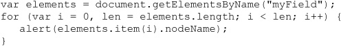
In either case, don’t be inefficient and access the length property of the returned collection multiple times. As the small snippet demonstrates, determine the length value once by setting it in the initializer.
NOTE There is a clear distinction between id and name. Very often when name continues on, we can set the values the same. However, id must be unique, and name in some cases shouldn’t—think radio buttons. Sadly, the uniqueness of id values, while caught by markup validation, is not as consistent as it should be. CSS implementation in browsers will style objects that share an id value; thus, we may not catch markup or style errors that could affect our JavaScript until runtime.
For backward compatibility, the DOM and HTML5 specifications support some object collections popular under early browser versions and commonly found today. Initially, these collections from DOM Level 0 were roughly equivalent to what Netscape 3’s object model supported. Today, we see that the collections have expanded by HTML5 to include commonly used collections as well. The combination of these is shown in Table 10-4.
Table 10-4 Common DOM Collections
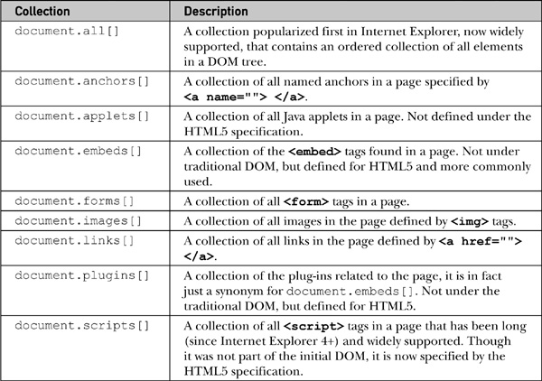
Whatever their origin, items in these collections can be referenced using an array syntax numerically (document.forms[0]) as well as associatively (document.forms[“myform”]). You can also use the item() method to access an array index, such as in document.forms.item (0). A namedItem() method could also be used, as in document.forms.namedItem (“myForm”).
NOTE The DOM Level 0 specification also defines document.applets[ ], a collection of Java Applets in the page. As of this edition’s writing, this is not in the HTML5 specification; and it should be noted that, practically speaking, Java applets are become increasingly rare in public-facing Web sites and applications.
The collections listed in Table 10-4 are live collections, meaning that if modifications are made to the DOM tree, the corresponding elements in a collection will be automatically updated.
A simple demo that allows you to explore the most common collections and their access methods can be found online and is shown in Figure 10-5.
Figure 10-5 Exploring traditional collections
ONLINE http://javascriptref.com/3ed/ch10/traditionalcollections.html
NOTE In older browser-style JavaScript, you also will very likely encounter direct path styles, so that when given a form called “myForm,” rather than using document.forms.namedItem (“myForm”) or document.forms[“myForm”], a path such as document.myForm is used directly. Reliance on this style should be avoided.
Another useful way to access elements with the DOM is using the document.getElementsByTagName() method. This method accepts a string indicating the types of elements that should be retrieved—for example, document.getElementsByTagName (“img”) would return a live list of all the img elements in the document.
In general, casing will not matter in basic HTML documents, as both
and
will return the same result regardless of markup usage. However, if we are working in an environment such as XHTML, case sensitivity may be problematic.
Like the previous methods discussed, getElementsByTagName() returns a live node list, so modifications of the DOM tree will be reflected in the returned collection.
We also note that the method can be run off an element. For example, in the previous example of collecting paragraphs, we may note that p elements are only found within a <body> tag, so we might use the following:
This simple example illustrates that the method can be run off an Element object, so we may find a particular paragraph and then find all the em elements within:
If we wanted to, we might chain those together, like so:
It is important to be careful when chaining methods together like this, as, if the first query fails and returns undefined, the second part throws an error.
One highly useful nuance to this method is that you can pass the wildcard selector * to the method to return all elements. As an example, we would use
to find everything in the document or
to find everything in a particular paragraph.
An interactive example can be found online and is shown in Figure 10-6.
Figure 10-6 Interactively exploring getElementsByTagName
ONLINE http://javascriptref.com/3ed/ch10/getelementsbytagname.html
Sometimes it will not be possible to jump to a particular point in the document tree, and there are times when you will want to start at a particular point of the tree and work down through the hierarchy following node relationships. Traditionally, there are two Document properties that present useful starting points for tree walks:
• document.documentElement points to the root element in the document tree. For HTML documents, this would be the <html> tag.
• document.body references the node in the tree corresponding to the <body> tag.
Commonly implemented and now finally documented under HTML5, you also should have a third start point:
• document.head references the node in the tree corresponding to the <head> tag.
If, for some reason, you run into an older browser lacking this property, it is easy enough to patch it using the previously discussed method document.getElementsByTagName(), like so:
NOTE Do not confuse document.title as a starting point that references the <title> tag. It is possible with this property to read and set the document’s title. However, it is not a reference to the corresponding element’s DOM node.
Finally, you might also have some interest in looking at the DOCTYPE definition for the file. This is referenced by document.doctype, but this node is not modifiable. It may not appear to have much use, but the document.doctype value does allow you to look to see what type of document you are working with.
A complete example that writes out the characteristics of these common nodes is shown here and in Figure 10-7.
Figure 10-7 Useful DOM elements
ONLINE http://javascriptref.com/3ed/ch10/startingpoints.html
Finding objects using the traditional DOM Level 0 or more modern DOM implementations can be a bit cumbersome at times. Fortunately, HTML5 and many JavaScript libraries have introduced methods to make finding collections of items much easier. The first method of interest is document.getElementsByClassName (classname (s)tofind). Given some markup like this:
we can fetch a selection of elements in the class called “myclass”, like so:
This would return a standard collection to loop over:
When applied to the previous markup, we would see styling only applied to the nodes in the specified class:
A few points we should make about the returned list. First, note that matching varies at times. For example, when a browser is in quirks rendering mode, you may see the browser perform value comparisons without case sensitivity:
However, if the browser is in strict mode, the getElementsByClassName() should be case-sensitive. Given room for poor browser implementations, don’t chance it and assume that class names and the associated method are always case-sensitive.
Next, we should note that the elements in the returned list are inserted into the collection in tree order—in other words, how they are found in a depth-first walk of the DOM tree. Second, and more importantly, the collection returned is a live nodeList, in the sense that any changes to the DOM tree that add or remove items in the searched-for class will be reflected dynamically in the returned list.
Like many DOM methods, getElementsByClassName() does not have to be run solely from the document root; in fact, it can be run off an arbitrary node. For example, given the markup here:
you could scope the element search by class name solely to this div using code like this:
or you could chain the code together, like this:
This probably is not too bad, but chaining can quickly lead to code that is difficult to follow and debug, thus exhibiting the inherent trade-off of readability and writabilty found in any programming language.
A final point to make about this method is that you may force a browser to find elements that have more than one class name by passing a space-separated string of classes required in the selection. For example,
would find elements with both the class “myClass” as well as “fancy.” Be careful this doesn’t mean you solely match an element such as
The method would find
as well as

because it requires simply the values to be present in the list of classes. It does not, however, match in an either/or fashion, so markup such as
would not be returned because both class names would be required.
While the getElementsByClassName() method is commonly supported in modern browsers, it is possible when dealing with some older browsers (particular pre-Internet Explorer 9) that the method is unsupported. It is, however, fairly easy to rectify this omission with a simple monkey patch, like so:

A complete example that employs both the old, browser-supporting code and illustrates the method and its live node list can be found online.
ONLINE http://www.javascriptref.com/3ed/ch10/getelementsbyclassname.html
Notice that this method relied on the previous introduced getElementsByTagName() and clearly is going to be somewhat inefficient, as it may have to iterate over the entire document to find the elements that have the set class name.
Two poorly named though quite powerful DOM selector methods are document.querySelector() and document.querySelectorAll(). Both methods take a CSS selector expression as a string to determine what to select, but each returns something slightly different. In the case of querySelector(), the method returns the first match of the passed selector string:
With the more commonly used querySelectorAll(), a node list of DOM elements that match the query is returned:
To illustrate these methods, first consider the following markup here:
We then might run a query like
to return all the paragraphs or
to fetch just those in myClass. We can, of course, get quite specific, like this:
which returns just the span elements in the class myClass that are direct descendants of a p element.
Given the general nature of the method, you should note that
emulates a getElementById() call, while
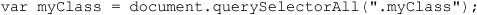
produces the same result as invoking getElementsByClassName().
Since CSS supports selector grouping with commas, you can pass numerous selectors at once, like so:

Here, we see a list composed first of a very specific rule, then an element with a particular id value, and then all elements in a certain class. If you know CSS, you can imagine how much work you might perform with this method!
Unlike other DOM methods discussed previously, a live node list is not returned for calls to the querySelectorAll() method. The returned snapshot approach improves performance, but it means that future changes to the DOM tree will not be reflected in the returned values dynamically:
The return value of querySelector() is static as well. It is either a single DOM element or a null value and certainly not a live list.
Like other DOM methods, both querySelector() and querySelectorAll() can be run off of an element object. For example,
would run the query just on the subtree found under a particular element. Of course, we really don’t need to do that if you think about CSS carefully. For example,
does the same thing as the previous example, but using the CSS rule passed in. Pretty much whatever DOM method you can imagine can be simulated with the querySelectorAll() method. Instead of document.getElementsByTagName (“p”), you could use document.querySelectorAll (“p”); or instead of document.getElementsByTagName (“*”), you could use document.querySelectorAll (“*”). Even traditional collections’ access approaches like document.forms.namedItem (“form1”) can be rewritten for this powerful method: document.querySelectorAll (“form[name=form1], form[id=form1]”).
It should be clear by now that these methods are extremely powerful if you understand CSS selector syntax. Admittedly, though, this syntax can be a bit cryptic, particularly under CSS3, and some care should be taken to form the query properly. If you pass a syntactically malformed query to either method, it will throw an exception. Of course, if you want to be safe, you can catch such exceptions and handle them somehow:
Even when the CSS selector syntax is correct, we should exercise some care because small details can produce wrong results. For example, case sensitivity can be important, particularly if a browser is in quirks mode. Form your queries carefully before you blame your JavaScript code!
A full example illustrating the use of the selectors can be found online and is shown in Figure 10-8.
Figure 10-8 Testing the querySelectorAll() method
ONLINE http://javascriptref.com/3ed/ch10/queryselectorall.html
Probably the only downside of this method, other than its cryptic name, is that it is not implemented in older browsers. Fortunately, like getElementsByClassName(), it would be easy enough to directly simulate the method, though in this case the code would be quite a bit more expansive. When we explore JavaScript libraries such as jQuery in Chapter 18, we’ll see that they cover this issue.
Now that we know how to move around a tree and access its elements, it is time to discuss manipulation of the document tree by creating and inserting nodes. The DOM supports a variety of methods for creating nodes to be added to a document, and the most commonly used are shown in Table 10-5.
Table 10-5 Primary Node Creation Methods
NOTE DOM Level 1 also supports document.createCDATASection (string), document.createEntityReference (name), and document.createProcess Instruction (target, data), but these methods would not be used with typical HTML documents.
Creating nodes is easy enough, particularly if you have a good grasp of markup. For example, to make a paragraph you would use the following:
NOTE In the case of a standard HTML element, case will not matter. In fact, even if you create a lowercase tag, it will likely be identified in uppercase in the DOM tree. However, in the XHTML and XML languages, case should be used carefully in element creation and usage, as it will matter.
Any element can be made with the createElement method, so nothing keeps you from making emerging HTML5 types of elements, like
or even invented elements, considering that the DOM can work with arbitrary tags from any XML language:
Regardless of what elements you will make it, is likely you will need to put something within them. Fortunately, it is just as easy to make text nodes:
However, we need to put the newly created text nodes in our elements and insert them somewhere in the document in order to accomplish any interesting tasks. For now, they simply sit in memory.
The Node object supports two useful methods for inserting content. We start first with the easier of the two, appendChild (newChild). This method is invoked on the node to which you wish to attach a child, and doing so adds the node referenced by newChild to the end of its list of children. Let’s see the method in action by using it to combine the two nodes that we create:
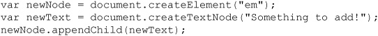
At this point, we would have this HTML fragment:
We could then add this markup into the document once we have found a convenient place to insert it. For example, we might have existing markup, like so:
We would then append our newly created elements to the end of our test paragraph:
This would result in markup that looks like
with a simple portion of the DOM tree like this:
As we saw above, we are not limited to append just elements; we can append text nodes as well. For example, given an original fragment like this:

we might create some new text nodes and add them in:
If we looked at the markup, we might expect to see this:
However, the DOM tree actually would not look as simple as that if you examined it properly:
So we see that when adding many text nodes, each one is created and inserted, rather than joined together. If we want to collapse the contiguous text nodes, fortunately there is a useful, though not widely used, DOM method for doing this —normalize(). If we ran
all of the text nodes within would be joined together like so:
An example demonstrating appending elements and text nodes and the effects of the normalize() method is shown in Figure 10-9 and can be accessed online.
Figure 10-9 The appendChild() method may require the use of normalize().
ONLINE http://javascriptref.com/3ed/ch10/appendchild.html
NOTE If you use the innerHTML property, discussed shortly, to examine subtrees with text nodes, you will not see what this section describes. That property shows the HTML source, not the DOM tree, using Firebug or similar developer tools; looking explicitly at the DOM tree will reveal the nonnormalized text nodes.
The insertBefore (newChild, referenceChild) method is a bit more complicated than appendChild, as you must specify which child you want to insert newChild in front of using referenceChild. Next, you reference the parent node of the node you wish to run insertBefore() on to acquire the necessary references. For example, given
we may desire to insert an <em> tag with a text node in front of the <strong> tag. To do this, we would first create the text node, then find the reference point for the <strong> tag, and finally run the insertBefore() method off the parent paragraph element, like so:

We could, of course, insert plain text nodes as well, but we should then be wary of having unjoined text nodes we may wish to normalize. A simple example to explore the insertBefore() method is shown in Figure 10-10 and found online.
Figure 10-10 Insertions also may require normalization.
ONLINE http://javascriptref.com/3ed/ch10/insertbefore.html
Now, if only two methods to add content to the document seems a bit meager to you, know that we agree. The DOM is interesting in that, while verbose in its method names, initially it only implemented the tersest set of features. Anyway, it is easy enough to manufacture new methods to do what you want. For example, imagine you wanted some method called insertAfter (newChild, referenceChild), which puts a node after some reference node. The code for doing so is actually easily derived using our existing methods. We can even extend the Node object if we are bold, like so:
Later, we could use our new insertAfter() method just as we might any other DOM method. For example, given the markup here:
we could, if we wanted to, insert some text after the element with an id attribute value of “p2”, like so:
ONLINE http://javascriptref.com/3ed/ch10/insertafter.html
Fortunately, we don’t necessarily have to engineer our own code to make element insertion easier, because Internet Explorer introduced a useful method called insertAdjacentElement (position, element), which provides most functionality a coder would desire. The method takes a position string, which indicates whether the element should be put just before the DOM element it is run on (“beforeBegin”), as the first child just within the object (“afterBegin”), as the last child of the object (“beforeEnd”), or just after the end of the element (“afterEnd”), as shown here:

ONLINE: http://javascriptref.com/3ed/ch10/insertadjacentelement.html
Sadly, at the time of this publication, this method isn’t available ubiquoutously in browsers. Fortunately, JavaScript libraries have added a number of useful methods to “fix” or extend the DOM. There isn’t much magic if you dig into their source; it will eventually look something like what you have just seen.
The previous section suggested that the DOM provides only the bare minimum necessary to manipulate the document. What this often means is that it can be a lot of work to do something relatively simple. Imagine if you have some blank <div> tag, like so:
and you wanted to insert the message “Sometimes the DOM can be a big headache!”. To do this, you would create all the components and add them to the div element, like so:
That seems like quite a bit of work. Well, fortunately there is an easier method.
Quite often, the DOM is a bit cumbersome to work with. Our previous example could be accomplished quite easily if we simply set the innerHTML property of the div element. Initially introduced as a proprietary feature in Internet Explorer 4, it was later added to most every browser and today is not only a de facto standard but is documented as standard under the HTML5 specification. The innerHTML property holds a string representing the HTML contained by an element. Given this HTML markup:
the following script retrieves the enclosed content:
The result is shown here:
Not only can you read the markup contents of an element, you may set it with innerHTML. For example, the previous example where we added the string “Sometimes the DOM can be a big headache!” to a div element would be accomplished with innerHTML, like so:
Compare the DOM way with the innerHTML yourself online.
ONLINE http://javascriptref.com/3ed/ch10/innerhtml.html
Pragmatically speaking, there is little to dislike about innerHTML at first glance. However, when it was first introduced, there was much disdain online for the property, particularly as it was “nonstandard” in the words of its critics. There are actually some safety and performance concerns with it. In some sense, it is an eval() function for the DOM, providing direct access to the markup parser, which would appear to open developers up to some trouble.
While innerHTML is quite easy to use, there are a number of gotchas to concern yourself with. First, the handling of special characters won’t be handled as expected. For example, consider here where you add in a pre element with some line breaks:
The result will actually show physical \n\n characters instead of breaks. This is easily circumvented with <br> tags. You may also run into problems, particularly in older browsers, in some edge cases with escaped quotes. However, these are relatively minor annoyances. More dynamic content tends to be more consistently problematic.
A slightly worse problem is setting the <style> tag with innerHTML. First off, don’t abuse it—if you are going to add <style> to the document, it should be performed in the head element. Some older browsers will not recognize the added element otherwise.
The most troubling aspect of using the innerHTML property are elements containing JavaScript or the <script> element itself. In general, you will find it quite difficult to add <script> tags using innerHTML. For example, the following will not work in a browser:
Now, depending on how this setting is performed, you might think there is simply a parser error at work here and try to split the script tag, like so, but that won’t make a difference:
It is possible under Internet Explorer to get this running by inserting some node in front of the element:
However, that may not do it because you likely will be forced to defer execution to get it to consistently run in that browser:
This is a quirky workaround and, sadly, known more than it should be. In fact, given how inconsistently script insertion works with innerHTML, even if you get it to work you probably shouldn’t employ the scheme.
Now, you might get the impression that a script can’t be added to the document with innerHTML, but that isn’t quite true. For example, if you add the following, it will run:
Now, you might wonder if this is safer, as it forces user interaction. Well, not really—once you allow handler values, it opens the floodgate for injectable code. Consider if we insert an element with a load event that triggers a script:
Obviously, that pretty much runs code immediately. This could, of course, fetch an external dependency and present itself invisibly if we were aiming to be sneaky. If the aim here was keeping people from doing bad things with innerHTML, simply not allowing the script element falls a bit short. It is necessary to be careful using innerHTML. We will take a closer look at security issues in Chapter 18.
Internet Explorer actually seems to recognize the problem of injected script with innerHTML a bit better than you might expect. This browser has provided the window.toStaticHTML() method since Internet Explorer 8. If we want, we can pass an inserted string to it and have it sanitize it before setting innerHTML.
What’s so amusing about this kind of thing is that there are more consistent ways to execute inserted code—just use a standard DOM insertion. For example, the following will indeed work without hassle.
Like everything on the Web, there is more than one way to accomplish something, and the claim of superiority of one coding mechanism over another is often subject to interpretation. There is a simple program online that you can play with to see what escaped characters, styles, and especially script innerHTML handles in your browser.
ONLINE http://javascriptref.com/3ed/ch10/innerhtmldetails.html
Microsoft introduced the outerHTML property at the same time as innerHTML. The main point of the propertry is that it also looks at the element it is targetting. For example, given
if you alerted the outerHTML property of the paragraph
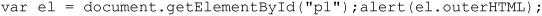
you would see the containing element as well, and it is demonstrated here:
Obviously, like innerHTML, you can also modify the property:
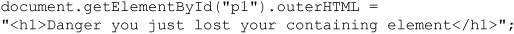
Here we point out a danger in blowing away your containing element: you lose a reference. You can easily address this by placing an id attribute on the newly created item. You might even be tempted to copy the old id value. However, be careful, because once you lose the reference, you will have to traverse the tree to replace the item again. If you want to experiment with outerHTML, try the example online, but at the time of this edition’s writing, some browsers still were not supporting the property, despite supporting innerHTML.
ONLINE http://javascriptref.com/3ed/ch10/outerhtml.html
The innerText property works similarly to the innerHTML property, except that it is focused solely on the textual content contained within an element. For example, given our simple test markup
if you look at the innerText of the paragraph, like so:

you’ll see the following result:
Unfortunately, this may not work in some browsers, notably the Firefox family of browsers, which at this edition’s writing do not support this syntax; instead, Firefox supports the textContent property. We can easily handle this with a simple if statement:
You should be curious to note that the property has combined three individual text nodes into a string. Given what you have seen with white space handling, you might actually see different results.
Setting the innerText, or textContent, will create a single text node and will turn any markup included into actual characters, as opposed to an element or entity:
Like outerHTML, the outerText property works similarly, modifies the element itself, and replaces it with a single text node. You can experiment more with these properties using the example online.
ONLINE http://javascriptref.com/3ed/ch10/innertext.html
Another dynamic insertion method introduced by Microsoft and later incorporated into the HTML5 standard is the insertAdjacentHTML (position, string-of-HTML-text) method. This method should be run off a DOM element, and like innerHTML, it takes a string of HTML text that it will parse and add to the DOM tree. The method requires a position string that indicates the position where text should be added, with allowed values of “beforeBegin”, “afterBegin”, “beforeEnd”, and “afterEnd”. To illustrate the method, we turn to our example markup from before:
Now, if we used the “beforeBegin” value, it would insert the new nodes right before the target element, just outside of it, so the following
would produce this:
If we ran “afterBegin”, it would insert the new DOM nodes just within the specified element, so the following
would produce this:
The end strings are similar with “beforeEnd”:
The “beforeEnd” value inserts the nodes just before the close of the specified element:
The “afterEnd” value, on the other hand:
puts the new nodes just outside the element before any following text or markup:
The insertAdjacentText (position, string) method acts in the same way as insertAdjacentHTML() but simply inserts the passed text without parsing as a single text node.
An example for experimenting with these methods is shown in Figure 10-11 and can be found online.
Figure 10-11 The insertAdjacentHTML() method powerful proprietary feature is now standard.
ONLINE http://www.javascriptref.com/3ed/ch10/insertadjacenthtml.html
NOTE Under the HTML5 specification, the positional keywords such as “afterBegin” are not in camel case and may appear in any case. The specification presents them in all lowercase (for example “afterbegin”).
The final dynamic content insertion methods, which are codified now under HTML5, are some of the oldest methods for document manipulation. The document.write() and document.writeln() methods have been around since the dawn of JavaScript and are used at document creation time to dynamically insert content into a document at the position of execution. We’ve seen the document.write() method a number of times already in the book, but let’s take a moment to point out some important considerations with it.
If on page load we encounter a script element that contains
it will insert content directly to the document. If the string passed to the method contains markup, it will be interpreted as such and added to the DOM tree:
This would create a text node, a strong element with a text node child, and a file text node. Insertion is not limited to any particular element; in fact, dynamic content, including more script code, is easily inserted with these methods. It should be noted that because of browser parser limitations we will likely need to split up the <script> tag within a document.write() invocation so it is not misinterpreted:
Using document.write() or document.writeln() will not make much of a practical difference because HTML generally does not care that much about extra whitespace; however, when CSS whitespace rules or <pre> tags are in place, document.writeln() will reveal that indeed return characters are being added.
It is important to note that dynamic insertion into the document using the document.write() or document.writeln() method should only be performed upon page load. If after page load either method is called, the document will be reopened and overwritten:
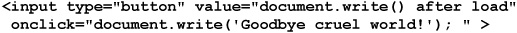
Today, most browsers will correctly keep the document open for writing indefinitely, unless a document.close() method is called:
While keeping a document in a loading state may be useful for further writes, it is likely quite disorienting to the user because the browser will typically indicate that the document is still loading until the page is closed somehow, via a method call or some timeout.
ONLINE http://www.javascriptref.com/3ed/ch10/documentwrite.html
As we close, the vitriol surrounding the document.write() method is interesting. It has its concerns, which can be as problematic as eval(); however, unlike that method, it is so widely used for analytic script insertion, banner ad code, and more that it is extremely doubtful it can be removed from common practice or support in the near future.
NOTE One gotcha with these methods is that they are not supported in strict XHTML documents. Be careful while testing if you are not actually delivering what appears to a browser as XML by MIME type or file extension. The document.write() and writeln() methods may work, but in proper served and parsed environments they will fail.
Sometimes you won’t want to create and insert brand-new elements. Instead, you might use the cloneNode (deep) method to make a copy of a particular node. The method takes a single Boolean argument deep, indicating whether the copy should include all children of the node (called a deep clone) or just the element itself. For example, given markup such as

a cloneNode() invocation such as
returns an empty paragraph element that would look like this:
If we pass deep as a true value, the entire subtree will be cloned, so
would return a DOM subtree, like this:
Of course, in either case we see that the clone is a bit too complete because the id attributes are copied as well, and you’ll likely need to alter those if you plan on referencing the newly inserted element later on by its id value. We’ll see how to do that when discussing manipulating attribute values.
A live example demonstrating the method is shown in Figure 10-12 and found online.
Figure 10-12 Watch out for cloneNode() details.
ONLINE http://javascriptref.com/3ed/ch10/clonenode.html
It is often convenient to be able to remove nodes from the tree. The Node object supports the removeChild (child) method that is used to delete a node specified by the reference child it is passed. For example,
would remove the last child of the node referenced by the variable current. Note that the removeChild() method returns the Node object that was removed:
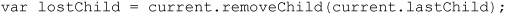
Besides deleting a Node, you can replace one using the method
where newChild is the node to replace oldChild with and the method operates on the parent of the replacement node. This simple example shows how the method is used:

Be careful when using replaceChild(), as it will destroy the contents of nodes that are replaced.
The following example shows deletion and replacement in action:
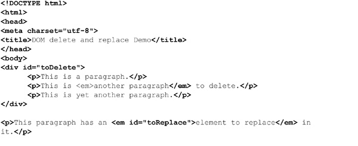
ONLINE http://javascriptref.com/3ed/ch10/deletereplace.html
Because many browsers include whitespace in their DOM trees, you may notice that you have to press the delete button a few more times in the preceding example to effect the same change as you would in Internet Explorer. Once again, we see the effect of whitespace in the DOM tree.
Often, when manipulating a document to effect a change, you do not modify elements but, rather, the text nodes contained within. For example, if you had markup like
you would use
to access the text fragment “This is a test” within the paragraph element. Once the textNode has been retrieved, we could access its length using its length property, which indicates the number of characters it contains, or even set its value using the data property:
DOM Level 1 also defines numerous methods for operatingon text nodes. These are summarized in Table 10-6.
Table 10-6 DOM Methods for Manipulating Text Nodes
The following example illustrates these methods in use:
ONLINE http://www.javascriptref.com/3ed/ch10/textnodemethods.html
NOTE After retrieving a text node data value, you could always use any of the String methods discussed in Chapter 7 to modify the value and then save it back to the node. However, since the DOM is not necessarily specific to JavaScript, the previously discussed methods can be assumed in whatever DOM-supporting environment you find yourself working.
One last note is that it is also possible to manipulate the value of Comment nodes with these properties and methods. However, given that comments do not influence document presentation, modification of such nodes is not that common.
At this point, you are probably wondering how to create more complex elements complete with attributes. The DOM supports numerous attribute methods. To illustrate these, we start first with the following markup:
Now, we might want to use the DOM to detect the existence of attributes. The hasAttributes() method will return a Boolean indicating if any attributes are found:
Next, we might check for the existence of a particular attribute using the hasAttribute (attributeName) method, which would return true or false, depending on the existence of the attribute on the element regardless of the set value:
If we want to retrieve an attribute value, we would use getAttribute (attributeName) on a Node object, which would return a string value holding the attribute value:
If we desired to change the attribute value, we would use the setAttribute(attributeName, attributeValue) method, as shown here:
If the attribute does not exist on the element, it will be created by this method:
While we might be tempted to clear an attribute by setting its value to an empty string, this really doesn’t remove it. Instead, it just has it set to a blank value. To remove an attribute completely, use removeAttribute (attributeName), like so:
Interestingly, the method fails without exception if passed the name of an attribute that does not exist. Sadly, the method does not return information about its success or failure.
All of these attribute properties are summarized in Table 10-7, and a consolidating example can be found online.
Table 10-7 Common DOM Attribute-Related Methods
ONLINE http://javascriptref.com/3ed/ch10/attributes.html
NOTE When dealing with HTML documents, the attribute names will be lowercased automatically in DOM-compliant browsers, so setAttribute (“TITLE”, “Watch it!”) would set the title attribute in lowercase. Fortunately, getAttribute (“TITLE”) would also still retrieve the value correctly, given the automatic case change. In XML documents, such transformations will not happen given case-insensitivity restrictions.
While most of the attribute methods are pretty straightforward, there can be quirks in some browsers. When we discuss the intersection between the DOM and HTML a bit more closely, we will demonstrate some of these. For now, let’s consider the second and lesser-used half of the attribute discussion: attribute nodes.
An alternative way of manipulating attributes is to employ methods that manipulate attribute nodes. This is not a suggested way of manipulating attributes, but is presented mostly for completeness and for introducing the attributes property, which may be useful on occasion.
To make an attribute node, use the createAttribute() method, like so:
This method will return a DOM Attr node, as evident when you look at the nodeType: alert (attr.nodeType)
Since this is a plain DOM node, we can set its value with nodeValue, like so:
Finally, you will attach it to a DOM element:
Later, if you want to retrieve the attribute node, use the getAttributeNode (attrName) method and pass it the name of the attribute (attrName) you are looking for. Once retrieved, read the nodeValue property to get the attribute’s value:
If you wanted to remove the attribute with this syntax, you would use the removeAttributeNode (attrNode) method, but notice that you must pass it the attribute node in question, not just its name, so you end up needing to get it first quite often:
There is one aspect to this form of syntax that is useful, as compared to the previously mentioned getAttribute(), setAttribute(), and removeAttribute() methods—that is the attributes property. The attributes property on an element contains a NamedNodeMap holding a live collection of the attributes for the element. A simple use of this would be to iterate over the list. We might use the item() method to access a member of the collection:
However, we are more likely to simply use common array indexing:
To demonstrate the value, the following code snippet collects the attributes of a specified DOM element for output:
In general, this fragment should properly enumerate the set attributes on a DOM node; however, under older versions of Internet Explorer (6–8), as well as newer versions in backward emulation mode, the code will show all attributes set or not. You can see the comparison in Figure 10-13.
Figure 10-13 Watch out for attribute collection problems under Internet Explorer.
A small code adjustment will take care of this discrepancy; it looks for set values or employs the specified property that Internet Explorer will set to true if it is actually present in the code:
Since the attributes property is a collection, we also may use name-based access syntax. For example, to find the title attribute with this syntax, we might use
or more likely
Given this syntax, to read out the title attribute’s value, you would write
It seems obvious that the following is much easier:
but there is more than one way to manipulate attributes. Similarly, you may set an item into the attribute list with setNamedItem (attrNode) and pass it a new attribute node.
Finally, you may remove items from the attribute list with
All of these various attribute manipulation schemes are illustrated in an example shown in Figure 10-14 and found online.
Figure 10-14 Testing attribute node methods
ONLINE http://javascriptref.com/3ed/ch10/attributenodes.html
A few other node methods can be useful. The importNode (node, deep) and adoptNode (node) methods are used when sharing nodes between documents. A common example would be sharing nodes between an iframe document and the main document. In order for one document to use a node from another document, it must be imported first. The import can be done using either importNode() or adoptNode(), with the difference being that the node is removed from the original document when using adoptNode(). Both methods are performed on the importing document and accept the node as the argument. In addition, importNode() takes an additional second parameter that is a Boolean indicating whether the import should also import the children of the node. For security restrictions, the contents of a document can be accessed from another document only if the two documents are located in the same domain:
ONLINE http://www.javascriptref.com/3ed/ch10/adoptimport.html
Next, we will look at a couple of comparison methods. The first, isNodeSame (node), checks to see if two node variables are referencing the same node. The second, isNodeEqual (node), checks to see if two nodes are equal though not necessarily referencing the same nodes. In order for two nodes to be the same, they must be the same type, have the same nodeName, localName, namespaceURI, prefix, nodeValue, have equal children, and have equal attributes.
This results in the following output:

Note that div1 and div2 do not even evaluate to equal, even though they look the same. The sole difference is that the id set for each <div> is different, and therefore they are not equal.
So far, we have seen how to create, manipulate, and query objects defined within the HTML namespace. It is possible to integrate objects of various namespaces within an HTML page. Scalable Vector Graphics (SVG) is an example of this that will be looked at in detail in Chapter 17.
Creating objects from another namespace could potentially lead to naming conflicts. For example, imagine that we have a furniture markup language that we are embedding into our HTML page. We might want to call createElement() for a couch, a chair, and a table:
Once we run into table, we can see that there is a conflict. What kind of table should be created? Would it be a furniture table or an HTML table? Luckily, DOM Level 2 provides numerous alternative methods that allow a namespace to be provided when calling such methods. All of these methods end with NS and take the namespace’s URL as the first parameter. Besides these changes, they are identical to their counterparts:
Now, all of the objects will be created properly with the definitions provided by the specified URL.
The methods that support namespaces are shown in Table 10-8.
Now that we have presented both how to create HTML elements and how to set and manipulate attributes, it should be clear how very intertwined markup and JavaScript have become as a result of the DOM. In short, to effectively utilize the DOM, you must be an expert in HTML syntax, since many object properties are simply direct mappings to the attributes of the HTML element. What this means is that there is a mapping directly between HTML syntax and the DOM. As an example, we show our simple markup fragment from the beginning of the chapter here:
Now it is possible to access this markup and manipulate in a more direct fashion than previously suggested. For example, to read the title, we might use
instead of
This is possible because the DOM specification was extended to understand the syntax of HTML and has mapped the title attribute directly into the object. Consider the p element, defined under transitional HTML 4.01, which has the following basic syntax:
DOM Level 1 exposes most of these attributes in the HTMLParagraphElement, including align, id, className, title, lang, and dir. DOM Level 2 also exposes style, which we’ll discuss in the next section.
In general, the mapping is direct between HTML attributes and the DOM properties with the following considerations.
The mapping is direct if the attribute is a single nonreserved word, so an element’s align attribute is accessed via the corresponding DOM object’s align property. The written case of the attribute will not matter in standard HTML and will be presented in lowercase in the DOM.
The mapping will change case if the attribute has a two-word style; for example, the attribute tabindex will be represented in the DOM in the standard JavaScript camel-case style, in this case as tabIndex.
If the HTML attribute name is reserved under JavaScript, the value will be modified to work. This is most notable with the class attribute which under the DOM becomes className and the for attribute found on <label> tags which becomes htmlFor.
There are very few cases where these rules do not apply. For example, for the <col> tag, attributes char and charoff become ch and chOff under DOM Level 1. Fortunately, these exceptions are few and far between.
So given our previous discussion to set the align attribute on a paragraph instead of more appropriately using CSS we would use
and to set its title
However, to set the class attribute, we would have to use className
We might be tempted to set arbitrary attributes this way but that doesn’t generally work. For example, you might want to set a new attribute called “custom” to some value. You might assume this code would work.
It will work in older versions of the Internet Explorer browser, but should not in most browsers if they are being well behaved. If you wanted to set an attribute unknown to DOM HTML, you should instead use
Regardless of how browsers handle custom attributes, we should avoid them given that they create invalid HTML markup and instead employ HTML5’s newly introduced data-* attributes. The basic idea of this group of attributes is that you can create any attribute you like, as long as it is prefixed by the word data-. For example, here we create an attribute called data-example, indicating that this is indeed an example:
To set this value, we could, of course, use the following:
Retrieval then could happen with this markup:

HTML5 does extend the DOM to modify HTML element objects to support a dataset property, which then has properties for all the values that come after data-. For example, to set a data-author attribute, we could use this:
In markup, we would then have the following:
Retrieval, of course, could be performed just as easily:
If the attributes contain more dashes, there is a small change. For example, we might have the following attributes:
To access these attributes, we would convert the attribute names to camel case:
NOTE At the time of this edition’s writing, few browsers supported dataset, but all browsers could use data-* attributes using standard getAttribute() and setAttribute() syntax, of course.
There are a few other attributes that have DOM mapping considerations. Probably the most commonly encountered would be style attributes. Consider the following markup:
It would seem that if you accessed the style attribute, like so:
you would see a string, but instead, you will see a style object:
If, however, you look at it with getAttribute(), you will see
and you will see the string as expected:
Setting the style attribute’s value with a simple string representing the desired propertie(s) will not work as expected:
We’ll see in an upcoming section that if we want to work this way we will have to utilize the style object instead, like so:
We’ll explore the DOM style interface a bit later; however, even if such a facility weren’t provided, we could indeed manipulate the inline style using just the setAttribute() method:
Similarly, if we want to manipulate event-handling attributes that may be found on an element, such as onclick, care must be taken. Given
if we look at the onclick attribute directly:
it may reveal a value we don’t quite expect.
We won’t be able to set the value directly as a string, like so:
However, we can bind a function in code, like so, as we have done many times already:
We’ll see in Chapter 11 that there really are better ways to handle events, but for now we have concluded exploring the general mappings of attributes from HTML into the DOM and back.
ONLINE http://javascriptref.com/3ed/ch10/htmldom.html
The key to the DOM is understanding how to access each element as a DOM object and change its properties. The mapping between tags and objects is fairly straightforward, as mentioned in the previous section, with multiple-word attributes such as charset becoming camel case as a property (charSet) and reserved-word collisions avoided by renaming the property in the DOM, the most notable instance being the class markup attribute becoming the className property under the DOM. While this rule of thumb serves us quite well, it avoids a significant problem from some JavaScript developers, which is their knowledge of HTML. As the briefest of overviews, we present in Table 10-9 a summary of the traditional DOM intersected with the HTML5 DOM mappings between tags and objects. Now, because of the transition from old to new occurring with HTML5, there are bound to be properties that are not in specification still supported, and there likely will be new tags and attributes (and thus corresponding objects and properties introduced) when you read this. At the time of this edition’s writing, however, this list is comprehensive.
Table 10-9 HTML4 and HTML5 DOM-Element Mapping Summary

As a brief demonstration of just what can be done with the DOM, once we understand how fully HTML is mapped in, is illustrated by this simple example of an HTML editor built solely with DOM methods:
It would be easy enough to modify the editor displayed in Figure 10-15 to add attributes and apply multiple styles. We’ll leave that as an exercise for readers interested in diving into the DOM.
Figure 10-15 Simple DOM HTML editor
A variety of methods are provided to make up the core pieces of a table, including createTHead(), createTFoot(), createCaption(), and insertRow (index), where index is the numeric value indicating where to insert the row, starting from 0. Corresponding to the creation methods, the HTMLTableElement object also supports deleteCaption(), deleteTHead(), deleteTFoot(), and deleteRowIndex (index). We could write some scripts to show how to delete and add items to the table using these methods. What you will notice is that, while it is easy to delete items from the table, adding is another question. You actually need to add some items to a row before much of anything will take place.
When creating rows, it is possible to insert and remove cells using the insertCell (index) and deleteCell (index) methods. Once the shell for the table cells has been created, it is possible to add data to the cells through standard methods with the DOM or innerHTML.
The simple example here shows how to manipulate a table:
ONLINE http://www.javascriptref.com/3ed/ch10/table.html
An important aspect of the DOM standard is the ability to manipulate CSS properties as well as page-level style sheets. The manipulation of the look of the page by changing the page element’s CSS values’ particular visibility or position has often been dubbed Dynamic HTML (DHTML). Today, such effects can be mistakenly categorized under Ajax, regardless of whether network communication was used or not. Now we even see the term HTML5 being used as some catchall term for any modern interactive Web technology, including CSS manipulations with JavaScript. Regardless of the mislabeling, it is clear that the power afforded developers using DOM CSS manipulations is enticing to the layperson. Whatever it is called, they seem to like it.
The most direct way to modify CSS values with JavaScript is through the style property that corresponds to the inline style sheet specification for a particular HTML element. For example, if you have a paragraph like this:
you could insert an inline style like this:
If you are panicking about seeing an inline style, don’t worry so much about the idea of separation of style and structure pushed by markup mavens. We’ll get back to that later. For now, it serves to illustrate what is happening. Now, to perform a manipulation of the CSS with JavaScript DOM interfaces, you would access the style object of the element. Notice here that, if we alert it, the browser identifies not the text of the attribute but the availability of some Style object:
Now, like markup manipulation, we will be able to modify the CSS properties by applying a mapping between the CSS property and the DOM object. In the case of CSS, you often have a hyphenated property name, such as background-color, which under JavaScript becomes backgroundColor. In general, hyphenated CSS properties are represented as a single word with camel-case capitalization in the DOM. Some CSS properties have a single word, so their mapping is direct. For example, the CSS property name color is simply color under the DOM. Given these previous mappings and our previous example, we might manipulate the inline styles, like so:
This would then create the following markup:

The simple mapping described holds true for nearly all properties in CSS except for float, which becomes cssFloat because “float” is a JavaScript reserved word. Even emerging CSS property values with vendor prefixes map in the same way. For example, the CSS property -webkit-box-shadow can be used to specify shadow effects on boxes for WebKit-based browsers such as Safari and Chrome, so in JavaScript it would be manipulated as webkitBoxShadow.
A list of the commonly used CSS1 and CSS2 properties, with their corresponding DOM properties, is shown in Table 10-10 for reference. This table. admittedly, is not comprehensive, covering proprietary and emerging CSS3 properties, given their vast numbers and continual changes. Readers should instead heed the transformation rule rather than relying on some syntax table, regardless of source or timeliness.
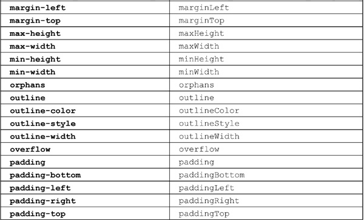
Table 10-10 CSS2 Property to DOM Property Mapping
An example that manipulates many of the common CSS properties is presented here. A sample rendering is shown in Figure 10-16.
Figure 10-16 Styling with the DOM
ONLINE http://javascriptref.com/3ed/ch10/dominlinecss.html
Manipulating style in the fashion of the previous section works only on a single tag at a time and has performance considerations since you need to change a single property at a time. This section explores how we might manipulate style rules using CSS class selectors. For example, we might have a style sheet with two class rules, like this:
We might then apply one class to a particular <p> tag, like so:
We can quickly manipulate the appearance of this paragraph by using JavaScript to change the element’s class. The element’s class attribute is exposed in its className property:
The following example shows a simple rollover effect using such DOM techniques:
ONLINE http://javascriptref.com/3ed/ch10/styleclass.html
The HTML5 specification introduces a much better way to manipulate class values using the classList approach. The basic idea is that, rather than working on the class attribute value via the className property as a string, we can work on it as a list. For example, given some markup such as
we could access a list of its classes, like so:
As a list, we can easily look at its length:
This allows us to write a loop and move through the collection either as an array or with the item() method.
Interestingly, we probably wouldn’t have to use this method that often because the API provides us a useful method for the list contains (classname), which determines whether or not a class is found in the particular list:
We also can add classes with the add (classname) method and remove them with remove (classname):
Finally, we can perform a toggle(classname) on a class name value, which will add it if not found and remove it if already in the list.
A simple example of some of these useful improvements to handling classes is shown here:
ONLINE http://www.javascriptref.com/3ed/ch10/classlist.html
Another example found online provides even more demonstrations for readers interested in this API.
ONLINE http://www.javascriptref.com/3ed/ch10/classlist2.html
Unfortunately, as a relatively new API, not every browser will support this approach and thus we find many libraries such as jQuery implementing it with their own syntax or polyfilling in the HTML5 style.
Another way to perform manipulations is by using the getElementsByTagName() method and performing style changes on each of the individual elements returned. The following example illustrates this technique by allowing the user to dynamically set the alignment of the paragraphs in the document:
ONLINE http://javascriptref.com/3ed/ch10/multistyle.html
It might seem cumbersome to have to iterate through a group of elements, particularly when you might have set different rules on each. If you are a CSS maven, you may prefer instead to manipulate complex rule sets found in a document-wide or even external style sheet.
It is often necessary to see what style an element is currently set at. For example, it would be useful to know that a <div> block is hidden when a toggle button is clicked. The first thought would be to check the corresponding JavaScript property:
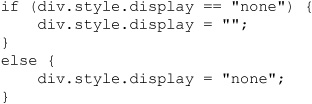
This will work if the display property is set through JavaScript, but it will not work if the property is set through a style sheet or is the default style of the page. Internet Explorer adds a property similar to style called currentStyle. This propery will return the computed style of a property no matter how it is set. Unfortunately, it does not work in the other browsers. However, getComputedStyle() can be used to accomplish the same goal. First, getComputedStyle() is called with the object passed in. This function returns a computedStyle object. Then it is possible to look up the relevant style with the getPropertyValue() method:
We can put this all together to build a cross-browser function that will handle all of the relevant cases:
So far, we haven’t discussed how to access CSS rules found in <style> tags or how to dynamically set linked style sheets. DOM Level 2 does provide such an interface, but beware in older browsers that it can be quite buggy. Because of this, you will often find people relying on inline style and class-based style manipulations.
Under DOM Level 2, the Document object supports the styleSheets[] collection, which we can use to access the various <style> and <link> tags within a document. Thus,
or
retrieves an object that corresponds to the first <style> element in the HTML. Its properties correspond to HTML attributes just as have the other correspondences we’ve seen. The most common properties are shown in Table 10-11.
Table 10-11 Style Object Properties
Under the DOM, the CSSStyleSheet object inherits the StyleSheet object’s features and then adds the collection cssRules[] that contains the various rules in the style block as well as the insertRule() and deleteRule() methods. The syntax for insertRule() is theStyleSheet.insertRule (ruletext, index), where ruletext is a string containing the style sheet selector and rules, and index is the position in which to insert it in the set of rules. The position is relevant because, of course, these are Cascading Style Sheets. Similarly, the deleteRule(index) method takes an index value and deletes the corresponding rule, so theStyleSheet.deleteRule(0) would delete the first rule in the style sheet represented by theStyleSheet. Unfortunately, at the time of this writing, Internet Explorer doesn’t support these DOM facilities and instead relies on the similar addRule() and removeRule() methods for its styleSheet object.
Accessing individual rules is possible through the cssRules[] collection or, in Internet Explorer, the nonstandard rules[] collection. Once a rule is accessed, you can access its selectorText property to examine the rule selector, or you can access the style property to access the actual set of rules. While DOM Level 2 provides various methods, such as getPropertyValue() and setProperty(), to modify rules it is generally far safer to simply access the style object and then the DOM property corresponding to the CSS property in question. For example, theStyleSheet.cssRules[0].style.color = “blue” would modify (or add) a property to the first CSS rule in the style sheet. Under Internet Explorer, you would use theStyleSheet.rules[0].style.color = “blue”. The following script demonstrates the basics of style sheet rule manipulation:
ONLINE http://javascriptref.com/3ed/ch10/cssrules.html
There are a few things to study carefully in the previous example. First, notice how we use conditional statements to detect the existence of particular objects, such as Internet Explorer proprietary collections and methods. Second, notice how in the case of rules[] versus cssRules[], like other DOM differences we simply add the collection to simulate correct DOM syntax under older versions of Internet Explorer. Last, notice how if statements are used to make sure that there are still rules to manipulate. You can never be too sure that some designer hasn’t changed the rules on you, so code defensively!
The DOM Traversal API (http://www.w3.org/TR/DOM-Level-2-Traversal-Range/) introduced in DOM Level 2 is a convenience extension that provides a systematic way to traverse and examine the various nodes in a document tree in turn. The specification introduces two objects, a NodeIterator and a TreeWalker.
A NodeIterator object created with document.CreateNodeIterator() can be used to flatten the representation of a document tree or subtree, which can then be moved through using nextNode() and previousNode() methods. A filter can be placed when a NodeIterator is created, allowing you to select certain tags.
Similar to a NodeIterator, a TreeWalker object provides a way to move through a collection of nodes, but it preserves the tree structure. To create a TreeWalker, use document.createTreeWalker() and then use firstChild(), lastChild(), nextSibling(), parentNode(), and previousSibling() methods to navigate the document tree. When these methods are called, the currentNode property is set to the appropriate value. A TreeWalker also provides the ability to walk the flattened tree using nextNode(), so in some sense a NodeIterator is not really needed. As an example, we redo the tree traversal example from earlier in the chapter using a TreeWalker object.
NOTE The DOM Traversal API is not supported under many older browsers, particularly Internet Explorer versions prior to 9.
ONLINE http://javascriptref.com/3ed/ch10/domtraversal.html
While the Traversal API is not widely implemented, it is fairly easy to write your own recursive tree-walking facility. Iteration is far easier and, in effect, is just a variation of document.all[].
The DOM Range API (http://www.w3.org/TR/DOM-Level-2-Traversal-Range/) introduced in DOM Level 2 is another convenience extension that allows you to select a range of content in a document programmatically. To create a range, use document.createRange(), which will return a Range object.
Once you have a Range object, you can set what it contains using a variety of methods. Given our example range, we might use myRange.setStart(), myRange.setEnd(), myRange.setStartBefore(), myRange.setStartAfter(), myRange.setEndBefore(), and myRange.setEndAfter() to set the start and end points of the range. Each of these methods takes a Node primarily, though setStart() and setEnd() take a numeric value indicating an offset value. You may also just as easily select a particular node using myRange.selectNode() or its contents using myRange.selectNodeContents(). A simple example here selects two paragraphs as a range:
Once you have a range, you can perform a variety of methods on it, including extractContents(), cloneContents(), and deleteContents(). You can even add contents using insertNode(). While the Range API is quite interesting, like many things it works differently in browsers, so make sure you use an abstraction or a library, and in either case proceed with extreme caution.
The DOM is still a work in progress. HTML5 and DOM Level 3, as well as browser features, continue to bring new document manipulation capabilities to JavaScript programmers. Some of the emerging ideas are simply convenience methods such as renameNode(); others are full-blown ideas including being able to serialize and deserialize XML documents. Interestingly, since some time has passed during this edition’s update, we note that many newer specifications simply never were implemented or were done solely in one lesser-used browser such as Opera. In other cases, “nonstandard” DOM ideas such as innerHTML, insertAdjacentHTML, and document.all[] have become widespread or even part of the HTML5 standard. Fortunately, now that JavaScript has achieved widespread popularity, in nearly all cases we can rely on the core of the DOM safely and then turn to libraries to abstract away the details and provide a bridge for the future. In Chapter 18, we will overview some of the more popular libraries such as jQuery and show how they extend and improve the DOM, but lurking under the scenes in all of these environments are the ideas presented in this chapter.
The DOM is at the heart of the intersection between script, HTML, and style sheets. Using the DOM and JavaScript, we are unrestricted in what we may manipulate in a document. The most important key to understanding the DOM is discovering how document trees are formed in a browser’s memory. Nodes in DOM trees are accessed in a multitude of ways, from traditional collections such as document.forms[ ], to the well-known document.getElementById() method, to the powerful document.querySelectorAll() that uses CSS selector rules to find nodes in a tree. DOM trees are not read-only, as nodes may be added, changed, or deleted in any way imaginable. Changing the underlying structure of a Web page allows for any change one might make, but it relies on a deep understanding of HTML and CSS. In fact, the DOM manipulations can be quite problematic in the face of malformed markup. In the words of the W3C itself, they are simply “unpredictable.” Hopefully, readers will take away from this chapter a renewed interest in getting markup and style correct.